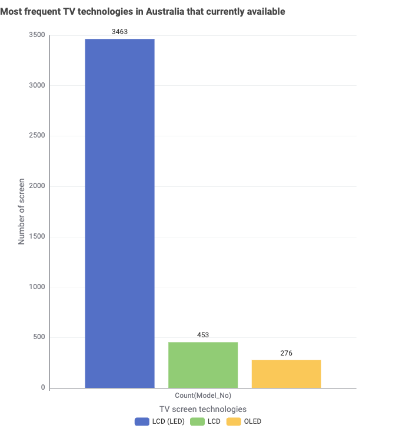
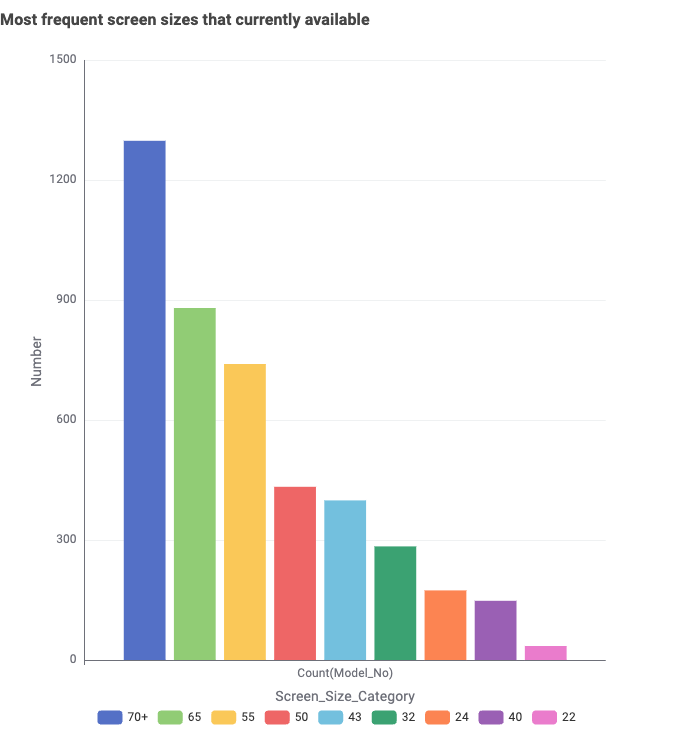

TV Availability Snapshot (Australia)
This page tells a short data story using the Australian TV dataset (filtered to currently available models). The goal is to help shoppers quickly understand what screen technologies, screen sizes, and brands are most common in the current market.
1) Which screen technologies are most common?
- What this shows: The number of currently available TV models grouped by screen technology.
- Why it matters: It helps buyers understand which technologies are widely available and easiest to find.
- Key finding: LCD-based TVs dominate the dataset. “LCD (LED)” has 3463 models, compared to 453 for “LCD” and 276 for “OLED”.
Note: “LCD (LED)” and “LCD” appear as separate categories in the source data, which may reflect naming differences.
2) Which screen sizes are most common?
- What this shows: The number of currently available TV models by screen-size category (inches).
- Why it matters: Popular size categories usually offer more choice and price points, making shopping easier.
- Key finding: Very large screens (70+ inches) are the most frequent category, followed by 65-inch and 55-inch models. Smaller sizes (like 22–24 inches) are much less common.
3) Which brands offer the most different models?

- What this shows: The number of different models (distinct Model_No) available per brand.
- Why it matters: Brands with more models typically provide more variety in size and features.
- Key finding: The market has a strong “long tail”: a small number of brands offer many models, and then counts drop off quickly across the remaining brands. Samsung is the largest, followed by Kogan and LG.
Summary
- LCD-based screen technologies dominate the currently available TV market in this dataset.
- Large screen sizes (especially 70+ inches) appear most frequently, with 65" and 55" also very common.
- A few major brands provide most of the model variety, followed by many smaller brands with few models each.